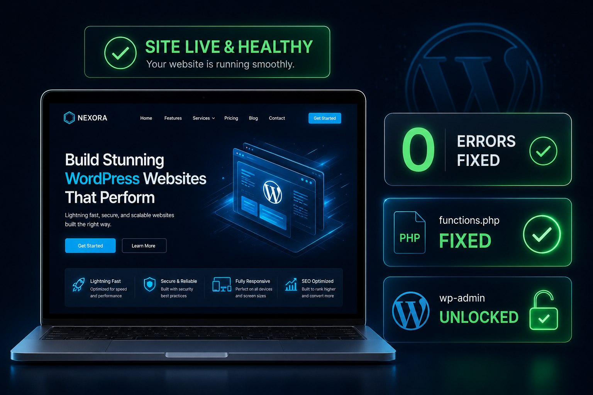

✕ Before · Critical Error
White screen after a
White screen after a functions.php and plugin update
The whole site showed "There has been a critical error on this website" and wp-admin was locked out. Customers could not browse or order.
- PHP Parse error on line 148 of functions.php
- Call to an undefined function
- Site and dashboard both unreachable

✓ After · Fixed & Live
Site restored cleanly with zero errors
I took a backup, read the debug log, repaired the unclosed bracket and wrapped the missing function in a safety check. Then I tested the whole site.
- Root cause fixed in a child theme
- wp-admin access restored
- debug.log clean, no data lost